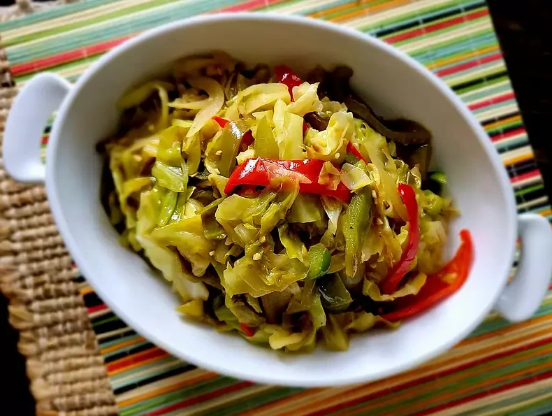

Easy Fried Cabbage

Ingredients
- 2 tablespoons grapeseed oil
- 1 medium yellow onion, chopped
- 3 cloves garlic, chopped
- 2 teaspoons Cajun seasoning, or to taste, divided
- ½ red bell pepper, sliced
- ½ medium green bell pepper, sliced
- 1 medium head cabbage, thinly sliced
- 1 tablespoon butter, or more to taste (Optional)
- salt and ground black pepper to taste
Directions
- Step 1: Heat grapeseed oil in a large cast iron skillet over medium heat. Add onions and cook until softened, about 3 minutes. Add garlic, stir, and cook until fragrant, 1 to 2 minutes. Season with 1 teaspoon Cajun seasoning and stir to combine.
- Step 2: Mix in red and green bell peppers; cook for 1 to 2 minutes Add cabbage, remaining 1 teaspoon Cajun seasoning, and stir to combine. Add butter and stir until melted. Simmer cabbage until it reaches desired softness, about 15 minutes. Season with salt and pepper.